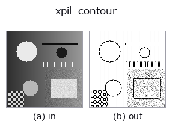

edges op• Datenarten: image → image
• Aufruf: fullseye.apply(img, "xpil_contour", a=0.5, b=0.5) (das 2-D-Modell ist ein Bild plus zwei skalare Regler a,b∈[0,1])

*Die Abbildung ist die tatsächliche Ausgabe auf einer synthetischen 128×128-Eingabe. Links Eingabe, rechts Ausgabe. Punktwolken als Draufsicht-Streudiagramm (Helligkeit = z), 1-D-Reihen als Linie, Volumen als Maximum-Projektion entlang z, Videos als mittleres Bild, komplexe Bilder als Betrag; Rückgabewerte, die kein Bild ergeben, werden als Werte gezeigt.*
*Regler a ändert die Ausgabe nicht (gemessen: identisch bei 0,1 / 0,5 / 0,9).*
*Regler b ändert die Ausgabe nicht (gemessen: identisch bei 0,1 / 0,5 / 0,9).*
Auf anderen Bildern (synthetische Szene / Foto / Münzen. Obere Reihe: Eingaben, untere Reihe: deren Ausgaben. Regler auf Standard):
▸ xpil_contour: other inputs (docs site)
*Die 4. Spalte ist eine Farb-Eingabe (H,W,3). Dieser Op verarbeitet Farbe, ohne Kanäle zu vermischen (er faltet den Farbkanal nicht als dritte Raumachse).*
Pillows Konturextraktionsfilter. Nutzt den festen Kernel von `PIL.ImageFilter.CONTOUR`, um einen Effekt zu erzeugen, der nur Umrisslinien als schwarze Linien auf weißem Hintergrund übrig lässt (ein Federzeichnungs-/Strichzeichnungseffekt).
> Die ausführliche Beschreibung unten ist der Originaltext — Zusammenfassung und Überschriften sind übersetzt.
a, b は未使用（固定カーネル）。
カーネルは 3x3 の `[-1,-1,-1; -1,8,-1; -1,-1,-1]（scale 1、offset 255）で、出力は 255 + (8*中心 - 8 近傍の和) を 0〜255 に飽和させたもの。平坦部は255（白）、周囲より暗い画素は暗く、周囲より明るい画素は 255 で飽和する。つまり段差の「暗い側」に 1 画素幅の黒線が乗り、明るい側は白のまま（xpil_find_edges` は同じカーネルで offset 0 なので両側が明るく出る）。
入力は [0,1] に clip して `*255 の切り捨てで 8 ビットの L 画像にし、出力を /255 で [0,1] に戻す（1/255 の量子化が入る）。画像の最外周1 画素は Pillow がフィルタせず入力値のまま返す。0 サイズの画像はValueError で拒否され、fail-soft で入力のクリップ版に落ちる（台帳に記録）。ノイズにも反応するので、前段に xpil_smooth_more や median を置くと線が整理される。線を領域として使うなら invert で黒線側を明るくしてから threshold` に繋ぐ。
• Leitfaden zur Familie gallery2d_edges
• Katalog der Beispieldaten (Download-URLs / Lizenzen) — 2-D nutzt skimage.data (BSD/Public Domain) plus synthetische Bilder, 3-D nennt Download-URLs echter Datenquellen (Stanford, PDS, …).
• Herkunft und Literatur der Operatoren — die Quellen der Forschung/Verfahren, auf denen diese Operatorfamilie beruht.
• Der kanonische Algorithmus (Autor, Jahr) und seine Anwendungen stehen im Familienleitfaden oben.
Das Programm unten ist nachweislich lauffähig (gleiche Eingabe wie die Abbildung). In der Studio-Hilfe wird dieser Block zu Schaltflächen, die es sofort laden und ausführen.
xpil_contour 0.40 0.50
▸ Load this pipeline · Load & run
• gallery2d_edges — py -3.11 examples/gallery2d_edges.py
image als Eingabe)identity · gaussian · mean_box · bilateral · unsharp · median · min_filter · max_filter
edges)sobel_mag · prewitt_mag · roberts_mag · dog · grad_dir · log · corner_response · sk_scharr
*Provenance: ops.py — 2D Operator-Registry. Diese Notiz wird von tools/opdocs.py md erzeugt (nicht von Hand bearbeiten).*
© 2026 Kazufumi Furuse — Fullseye operator documentation. Licensed under Apache-2.0.
{kind=link}